01
의의
드론이 뜨는 원리부터, 왜 비행 제어 컴퓨터를 직접 만들었는지까지
02
하드웨어
기체 프레임, 자체 제작 보드, 전원 계통과 안전 규칙
03
제어 소프트웨어
센서 → 검증 체계 → 게인 튜닝 → 안전장치 → 자동 착륙
04
시연 · 체험
진행자 호버링 시연, 모바일 균형잡기 체험, 텔레메트리 해설
법령상 위치 · 초경량비행장치 → 무인비행장치 → 무인동력비행장치 → 무인멀티콥터
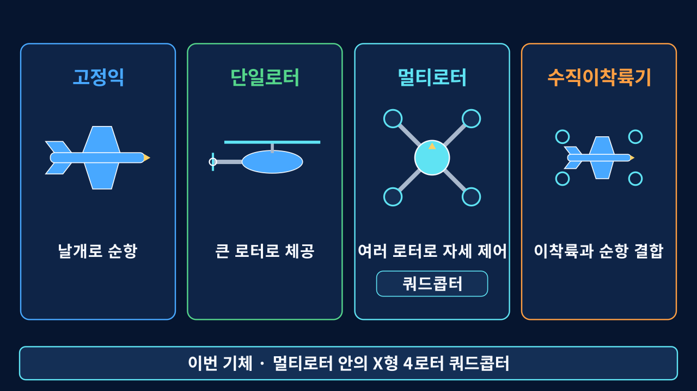
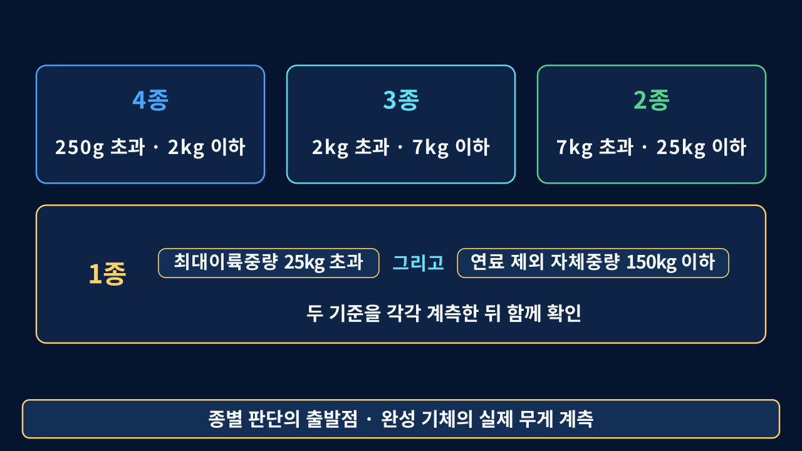
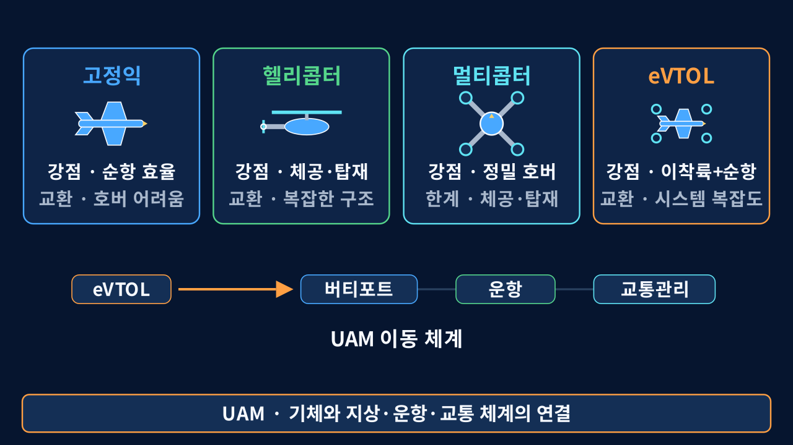
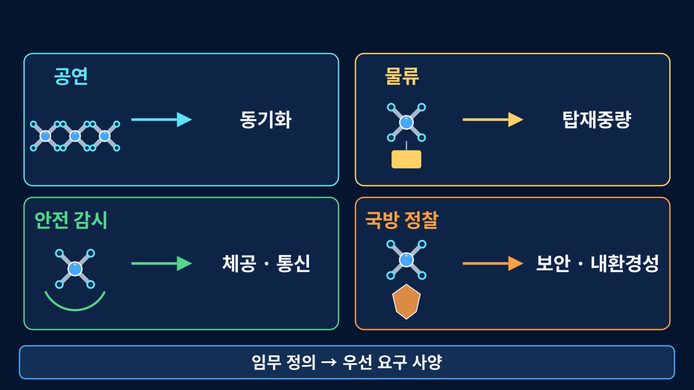


이미 있는 것
CAD · 보드 · 제어 코드 · 측정 기록
교육으로 바꿀 부분
문제 관찰 → 원리 이해 → 실험 → 결과 해석
현재는 사업 가설이다.
수요·가격·반복 운영 가능성은 시범 수업에서 확인한다.
수요·가격·반복 운영 가능성은 시범 수업에서 확인한다.
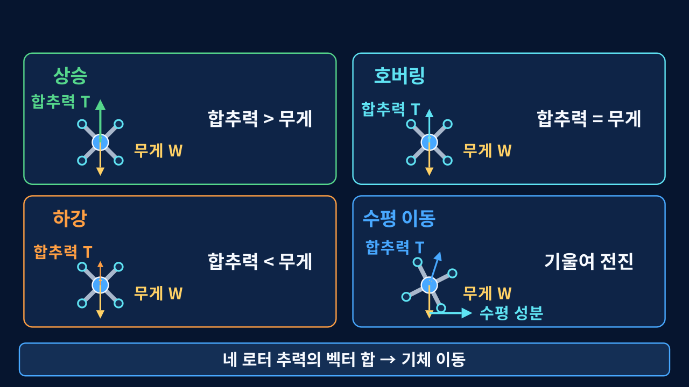
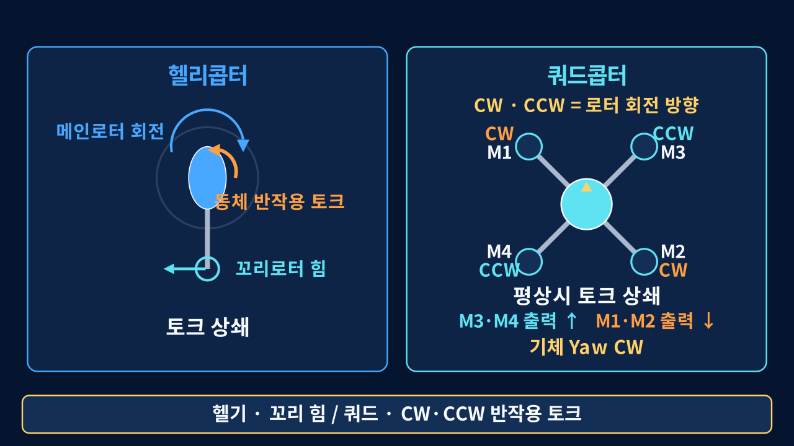
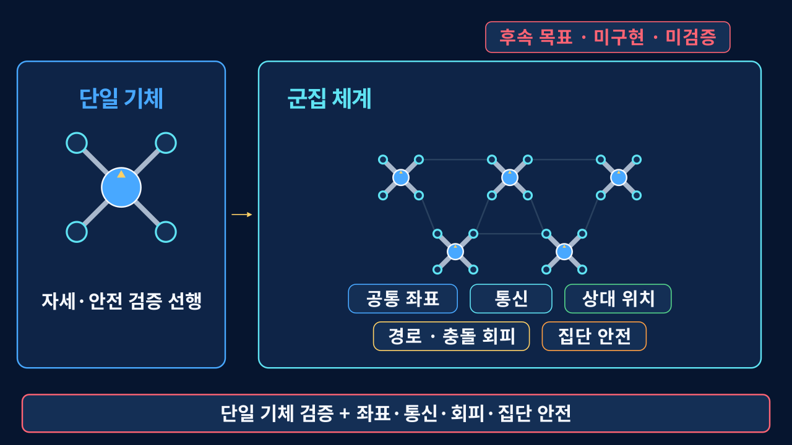
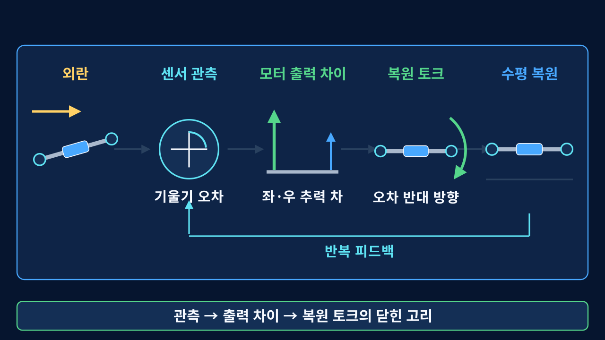

사진 속 작은 컴퓨터가 네 단계를 계속 반복한다.
센서 읽기
기울기와 회전 속도 측정
오차 계산
현재 자세와 목표 자세 비교
모터 배분
오차를 줄이도록 네 출력 조정
다시 측정
움직인 기체를 읽고 처음부터 반복
기체가 더 기울기 전에 측정과 보정을 반복
운용
상용 비행제어기
빠른 운용과 검증된 생태계가 강점이다. 현장 적용과 즉시 비행이 목적이면 상용 제품이 더 적합하다.
학습·검증
자작 제어기
제어 경로를 관찰하고 오류 재현과 안전 설계를 실습한다. 실패 원인을 스스로 디버깅하는 능력을 기르는 플랫폼이다.
우열이 아니라 목적의 차이이다. 상용품이 필요한 현장과 자작이 필요한 학습의 목적이 다르다.


기체 — 3D 프린팅 프레임
트러스 구조 암과 샌드위치 바디 플레이트를 직접 설계·출력
보드 — 자체 설계 FC
ESP32-S3, IMU 2개, 지자기센서, 전원 계통을 한 장에
코드 — 제어 펌웨어와 검증 도구
자세 추정, 캐스케이드 PID, 안전장치, 시뮬레이터, 지상국
순서가 중요하다. 센서 추정을 먼저 신뢰할 수 있게 만들고, 그것을 검증할 체계를 세운 다음, 그 체계가 낸 숫자로 게인을 정했다.
01
자세 추정 정확도
두 IMU의 축과 부호를 맞추고, 바이어스를 보정
02
검증 체계 구축
컴퓨터 안에서 기체를 날리는 시뮬레이터(SIL)
03
게인 튜닝
SIL에서 적분 보정의 영향을 확인하고 보수적으로 조정
04
통신·동시성 하드닝
멈춤·오탐·경쟁 상태를 막는 안전장치
05
자동 착륙
신호가 끊겼을 때 추락 대신 내려앉기
설계·수정 기록
고장 주입
측정·비교
현재 사업화 방향은 실제 개발 기록과 SIL 환경을 교사와 학생이 반복할 수 있는 실습으로 구성하는 것이다.
오늘 발표와 체험은
교육 모듈의 시제품이다.
교육 모듈의 시제품이다.
개념
IMU로 기울기를 추정하고 필터의 의미 확인
검증
부호 오류를 주입하고 SIL의 검출 결과 비교
체험
스마트폰 균형잡기와 실제 텔레메트리 해석
개념 → 실패 → 측정 → 수정의 기술 과정을 참가자 눈높이로 재구성
불안정성
드론은 작은 외란에도 기울어진다. 자세를 유지하는 것은 기체 움직임보다 빠른 피드백의 결과이다.
측정
게인과 보정값은 SIL·벤치 로그를 근거로 정했다.
재현
고장을 주입했을 때 테스트가 실제로 실패하는지 확인했다.
배터리
4S 3000mAh
→
전원부
12V → 5V / 3.3V
→
비행 제어기
ESP32-S3-N16R8
→
ESC ×4
PWM 30A
→
모터 ×4
BLDC 1750KV
자세 센서 · IMU ×2
ICM-42670-P · SPI · 자세 변화보다 빠르게 읽어 기울기와 회전 속도 추정
방위 센서 · 지자기
BMM350 · I2C · 자이로보다 느린 장기 방위 기준으로 좌우 회전(Yaw)의 누적 오차 보정
지상국 · 노트북
WiFi UDP · 조종 명령을 올리고 상태 텔레메트리와 고속 원시 IMU를 분리 기록
힘은 왼쪽에서 오른쪽으로, 정보는 아래에서 위로 흐른다. 모터·ESC·배터리와 센서는 상용 부품을 사용했고, 프레임·FC 보드·펌웨어·지상 제어 프로그램을 직접 설계·구현했다.
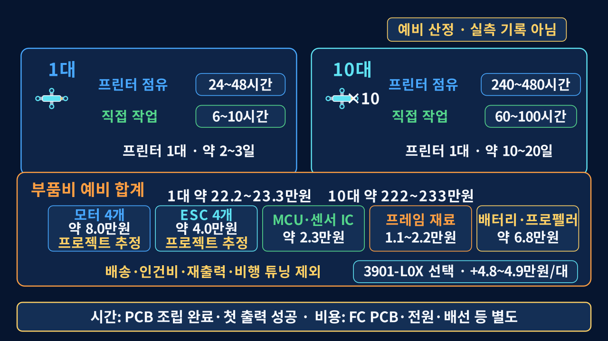
가벼우면서 휘지 않아야 한다. 둘은 서로 반대 방향의 요구이다.
- 암이 휘면 모터의 추력 방향이 바뀌어, 제어기가 계산한 값과 실제 힘이 어긋난다
- 속을 비우고 리브를 넣는 트러스 구조로 무게를 줄이면서 굽힘 강성을 확보했다
- 암은 교체형이다. 추락 시 암 하나만 다시 출력하면 된다
3D 프린팅을 전제로 두고, 조립에서 드러난 문제에 맞춰 형상을 수정해 다시 출력·비교했다.


- 상·하판 분리 — 배터리와 배선을 사이 공간에 넣어 무게 중심을 낮췄다
- 육각 패턴 타공 — 하중 경로를 남기면서 면적을 덜어냈다
- 제어 보드는 상판 위, 모터 배선에서 가장 먼 자리에 둔다
보드 위치는 나중에 문제가 된다. 모터 전류가 만드는 자기장이 방위 센서 측정값에 간섭을 일으키기 때문이다. 뒤에서 측정과 보정 과정을 설명한다.

CAD
→
출력
→
조립
→
수정
조립에서 찾은 수정 지점
나사 간격
적층 방향
배선 통로
출력물을 직접 조립하고 문제를 다시 CAD에 반영하는 반복 과정이다.
Maker Space 박근원 선생님의 장비·제작 지원에 감사드립니다.

- ESP32-S3 한 개에 모터 4채널, IMU 2개(SPI), 지자기센서(I2C)를 모았다
- 12V 입력에서 5V·3.3V를 만들고, 전원 경로에 보호용 MOSFET을 두었다
- 센서와 모터 신호를 확인할 수 있도록 디버깅 연결 지점을 두었다
- 디버깅용 USB와 부트·리셋 스위치를 보드 위에 유지했다
회로도의 핀 이름이 그대로 펌웨어의 상수 이름이 된다. 두 곳이 어긋나면 증상이 부호 오류처럼 나타나서, 원인을 찾는 데 시간이 오래 걸린다.


| 1차에서 겪은 일 | 현재 보드의 대응 |
|---|---|
| 전압을 재려면 부품 다리에 프로브를 대야 했다 | 전원·신호 측정용 패드를 표면에 노출 |
| 모터 배선이 보드를 가로질러 길게 지나갔다 | 모터 커넥터를 한쪽 변에 정렬해 배선 단축 |
| 센서를 교체하면 배선을 다시 만들어야 했다 | IMU 2개 · 지자기센서를 보드에 직접 실장 |
그래서 현재 보드는 전원·신호 측정 패드를 표면에 노출했다. 문제 발생 시 부품 다리에 직접 프로브를 대지 않아도 된다.
| 모터 | GPIO | 위치 · 회전 |
|---|---|---|
| M1 | 4 | 전-좌 · CW |
| M2 | 5 | 후-우 · CW |
| M3 | 6 | 전-우 · CCW |
| M4 | 7 | 후-좌 · CCW |
토크 비율 보존 · 한 축만 잘라내지 않고 세 보정량을 함께 줄인다.
모터 벤치 테스트는 아래 안전 순서로 진행한다.
- 벤치 테스트에서는 프로펠러를 제거한다
- 전원을 넣기 전에 극성·핀 배치·모터 순서·보정 방향을 확인한다
- 배터리 대신 전류 제한을 걸 수 있는 파워서플라이로 시작한다
- 한 번에 한 모터만, 낮은 출력 상한을 걸고 돌린다
- 조종 신호는 USB 연결로 보낸다 (무선 패드는 WiFi와 간섭)
바깥 자세 루프
기울기 오차 → 목표 각속도
안쪽 각속도 루프
회전 속도 오차 → 모터 출력
빠른 변화는 안쪽에서 먼저 억제
바깥 루프는 기체가 따라갈 자세 목표를 정한다.
바깥 루프는 기체가 따라갈 자세 목표를 정한다.
01
자세 추정
IMU의 간접 측정으로 기울기를 추정하는 방법과, 부호를 틀렸던 세 번의 사고
IMU의 간접 측정으로 기울기를 추정하는 방법과, 부호를 틀렸던 세 번의 사고
02
검증 체계
비행 없이 게인을 측정하는 시뮬레이터를 만들고, 그 시뮬레이터를 다시 검증하기
비행 없이 게인을 측정하는 시뮬레이터를 만들고, 그 시뮬레이터를 다시 검증하기
03
게인 튜닝
PID가 무엇인지, 그리고 적분 보정을 어떻게 조정했는지
PID가 무엇인지, 그리고 적분 보정을 어떻게 조정했는지
04
방위 보정
좌우 회전만 기준점이 없는 이유와, 모터 전류가 만든 새로운 문제
좌우 회전만 기준점이 없는 이유와, 모터 전류가 만든 새로운 문제
05
안전장치
멈춤·오탐·경쟁 상태를 막는 장치들과, 신호가 끊겼을 때의 자동 착륙
멈춤·오탐·경쟁 상태를 막는 장치들과, 신호가 끊겼을 때의 자동 착륙
06
개발 방법론
네 겹으로 겹쳐 놓은 검증 구조
네 겹으로 겹쳐 놓은 검증 구조
각도는 직접 읽지 않고, 두 센서의 간접 측정으로 추정한다.
가속도계 · 중력 방향
오래 보면 기준이 되지만, 흔들림과 선형 가속이 섞이면 요동한다.
자이로 · 회전 속도 누적
순간 움직임은 빠르게 잡지만, 작은 오차까지 더해져 시간이 지나면 흐른다.
빠르게 변하는 움직임
자이로는 빠르고 안정적 · 가속도계는 진동과 가속에 흔들림
오래 누적되는 오차
가속도계는 중력 기준 유지 · 자이로는 작은 오차가 누적
약점이 반대이므로 두 값을 섞어 서로를 보완한다. 이것이 상보필터이다.
각도 = α × (직전 각도 + 자이로 변화량) + (1−α) × 가속도 각도
α · 자이로와 가속도계 중 어느 쪽을 더 믿을지 정하는 가중치
자이로 — 순간 움직임을 빠르게 따라간다.
가속도계 — 오래 누적되는 오차를 중력 기준으로 되돌린다.
정지에 가까우면 빨리 교정하고, 급기동·진동 중에는 자이로를 더 오래 믿는다.
|a| ≈ 1g
가속도계 비중 증가
중력 기준으로 누적 오차 교정
|a|가 1g에서 벗어남
자이로 비중 증가
선형 가속·충격의 영향 억제
핵심 · 움직임이 클수록 자이로를 더 믿는다.
α ≈ τ / (τ + dt)
τ · 원하는 보정의 시간척도 dt · 계산 간격
τ가 짧음 → 중력 기준으로 빠르게 복귀
τ가 김 → 자이로의 빠른 움직임을 오래 유지
계산 간격이 바뀜 → 같은 응답을 위해 α도 함께 조정
계산에서 확인되는 성질
- α는 단독 숫자가 아니라 계산 간격과 함께 해석해야 한다
- 물리적으로 원하는 보정 속도를 먼저 정한다
- 가속도 신뢰도가 낮을 때는 자이로 비중을 높인다
- 계산 주기가 바뀌면 같은 α도 다른 응답을 만든다
현행 구현 · 가속도 신뢰도에 따라 미리 정한 α 후보를 선택한다. 시간상수 식은 그 후보의 의미를 해석하는 기준이다.
관측
기체는 수평인데
OVER-TILT 발생
OVER-TILT 발생
→
원인 확인
IMU2의 X·Z축
부호가 반대
부호가 반대
정렬하지 않고 평균해 값이 서로 상쇄됐다.
→
수정
평균 전에
축 방향 정렬
축 방향 정렬
IMU2에 X=−1, Y=+1, Z=−1을 적용했다.
두 IMU를 평균 내기 전에 축과 부호를 먼저 맞춰야 한다. 그렇지 않으면 평균이 오류를 줄이는 대신 숨길 수 있다.
자이로는 가만히 있어도 완전한 0을 내놓지 않는다.
해결 · 시작 시 영점 보정
전원을 켠 직후 정지 구간의 값을 바이어스로 저장하고, 이후 두 IMU의 모든 측정값에서 뺀다.
운용 규칙 — 전원을 켤 때 기체를 움직이면 잘못된 영점이 비행 내내 남는다.
Roll 각속도 = + 센서 Y
Pitch 각속도 = − 센서 X
Yaw 각속도 = − 센서 Z
가속도 X = + 센서 Y
가속도 Y = − 센서 X
가속도 Z = + 센서 Z
Pitch 각속도 = − 센서 X
Yaw 각속도 = − 센서 Z
가속도 X = + 센서 Y
가속도 Y = − 센서 X
가속도 Z = + 센서 Z
가속도 부호는 맞았지만 자이로만 반대로 들어갔다. 이 경우 제어기는 기울기를 줄이는 대신 키운다.
현재 검증된 여섯 줄 — 하드웨어와 자세 추정 코드가 만나는 경계
증상
→
기록·비교
→
원인 추적
→
오류 재현
→
수정 검증
실제 문제 · 축과 부호
기울기 보정이 반대 방향으로 작동
기록·비교
두 IMU의 축별 각속도와 자세 변화 비교
원인 추적
센서축 → 기체축 변환의 부호 약속 확인
host SIL · 오류 재현
Roll 믹서 보정 방향
R → −R
R → −R
보정 방향을 뒤집자 가상 기체의 Roll이 발산했고, 정상 판정 테스트가 실패했다.
확인 범위 · 해당 Roll 믹서 부호 오류 유형에 대한 host SIL 검출
실패를 재현하고 원인을 좁혀 수정 검증까지 연결하는 디버깅 학습이다.
게인의 정답을 모르는 상태에서 바로 띄우면, 실패할 때마다 기체가 위험해진다.
너무 약한 게인 — 기울기를 잡지 못함
너무 강한 게인 — 진동 뒤 발산 가능성
SIL에서 먼저 범위를 좁힌다.
실제 제어 코드를 가상 기체에 연결해 부호와 게인을 확인한 뒤, 실기에서 보수적으로 재검증한다.
실제 제어 코드를 가상 기체에 연결해 부호와 게인을 확인한 뒤, 실기에서 보수적으로 재검증한다.
실제 비행
진짜 IMU → 제어 코드 → 진짜 모터
SIL
가짜 IMU → 같은 제어 코드 → 가상 기체
제어 코드는 그대로
실제 비행 펌웨어의 제어 함수를 수정 없이 가져온다. 다시 구현하면 실제 펌웨어와 다른 코드를 검증하게 된다.
물리는 독립 구현
모터 위치와 프로펠러 회전 방향에서 토크를 처음부터 다시 계산한다. 믹서 코드를 베끼지 않는다.
왜 베끼면 안 되는가
같은 실수를 양쪽에 하면 부호가 우연히 맞아떨어져 버그를 놓친다. 두 계산은 서로 독립이어야 한다.
host SIL 하니스는 노트북에서 실행되며, 실제 비행 없이 게인과 자동착륙 값을 수치로 측정한다.
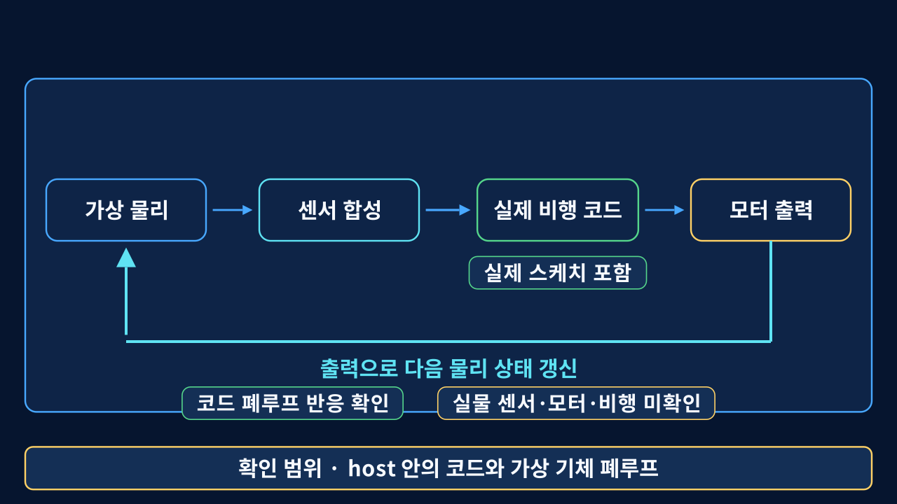
test_sil_attitude.cpp
#include "dual_imu_cascade_pwm.ino"
실기와 같은 pid_task()를 그대로 컴파일
＋
Arduino.h shim
vTaskDelayUntil()
→ pre_tick_hook(tick_index)
→ pre_tick_hook(tick_index)
실제 제어 태스크의 대기 지점에서 물리 계산 실행
직전 제어 결과
motorOut[4]
네 모터 PWM
→
독립 물리 모델
integratePlant()
추력 → 토크 → 각속도·자세
→
센서 합성
injectImuFromPlant()
기체 상태 → 듀얼 IMU 원시값
→
실제 제어 태스크
pid_task()
IMU 읽기 → 자세 추정 → PID → 새 motorOut
pid_task()가 다음 vTaskDelayUntil()에 도달
한 제어 주기
새 motorOut으로 다음 물리 계산
정상 S1 · PASS
초기 Roll 8° · Pitch −6°에서 시작
끝 구간 평균 0.0513° · 0.1179°
끝 구간 평균 0.0513° · 0.1179°
부호 반전 · FAIL
롤 배분 R → −R 주입
최대 |Roll| 1,291.8°에서 S1 실패
최대 |Roll| 1,291.8°에서 S1 실패
관측 결과 · 각도 발산
부호를 뒤집자, 제어기는 오차를 줄이는 대신 계속 키웠다.
정상 부호
비정상 발산이 사라짐
부호 반전
최대 롤 각도 1,292°까지 발산
주입 조건
SIL_INJECT_SIGN_FAULT로 롤 믹서의 보정 방향을 반대로 적용했다.
검출 결과
최대 롤 각도 1,292° 발산을 실패로 판정했다.
확인한 범위
이 주입 조건에서 하니스가 부호 반전 오류 유형을 검출한다는 점이다.
고장을 주입했을 때 테스트가 실패해야 해당 오류에 대한 검출력을 확인할 수 있다.
P(비례) 항 — 수평에서 벗어난 정도에 비례해서 모터 출력을 조정한다. 많이 기울면 많이, 조금 기울면 조금.
한쪽으로 미는 외란이 계속되는 상황
지속 외란 토크 ↔ P 제어 경로의 복원 토크
두 토크가 균형을 이루면 기체의 회전은 멈춘다.
적분항이 없으면 지속 외란을 상쇄하는 보정은 남은 자세 오차에 의존한다. 따라서 기체는 완전한 수평이 아니라, 조금 기울어진 상태로 평형을 이룰 수 있다.
일정한 외란이 계속되면 이렇게 정상상태 오차가 남는다. Kp를 키우면 오차는 줄지만 진동 위험이 커진다.
실제 기체에서 같은 역할을 할 수 있는 요인 — 무게중심 치우침 · 모터 추력차 · 테더
P
지금 얼마나 벗어났는지에 비례해 빠르게 대응한다.
I
오래 남은 오차를 누적해 밀어낸다.
과도한 누적은 상한과 하한에서 제한한다.
과도한 누적은 상한과 하한에서 제한한다.
D
변화 속도에 반대로 작용해 진동을 제동한다.
관측
일정한 외란 뒤에도 자세 오차가 오래 남음
→
해석
적분항이 호버 시간척도에서 충분히 작동하지 않음
→
조치
누적 제한의 여유를 남기고 Roll·Pitch만 보수적으로 조정
Ki가 커질수록 같은 오차가 더 빠르게 누적된다. 따라서 “몇 배가 정답”이 아니라, 정상상태 오차가 줄면서 진동과 포화 여유가 남는지를 함께 본다.
검증 경계 · host SIL에서 정한 시작값이며, 실기 최종값은 테더 로그를 보며 다시 조정한다.
바깥 자세 루프
자세 오차
→ 목표 각속도
→ 목표 각속도
기체가 향할 방향 결정
→
안쪽 각속도 루프
각속도 오차
→ 모터 출력
→ 모터 출력
빠른 회전 변화 억제
P
현재 오차에 반응
약하면 자세를 따라가지 못하고, 강하면 진동 여유가 줄어든다.
I
오래 남은 오차 제거
호버 시간척도에서 작동하되, 포화와 느린 진동이 생기지 않게 제한한다.
D
빠른 변화 제동
진동을 줄이는 대신 센서 노이즈를 키울 수 있어 필터와 함께 본다.
설정 순서 · 부호와 센서 신뢰성 확인 → P로 기본 반응 확보 → D로 진동 제동 → I로 남은 오차 보정
Roll · Pitch
중력 방향이 달라진다
가속도계를 장기 기준으로 사용
Yaw
중력 방향이 그대로이다
별도의 방위 기준 필요
다음 단계 · 지자기센서로 장기 기준 확보
BMM350은 자이로 누적 오차를 되돌리는 장기 방위 기준을 제공한다.
BMM350
느린 장기 기준
느린 장기 기준
→
자이로 Yaw와 비교해 방위 오차를 구한다.
Yaw 보정
작은 비중으로 누적
작은 비중으로 누적
→
고주파 자기장 간섭은 덜 따르고, 오래 쌓인 자이로 오차를 천천히 되돌린다.
새 Yaw = 이전 Yaw + K × 방위 오차
K가 너무 큼
모터 전류와 주변 자기장 변화까지 자세에 섞임
필요한 균형
빠른 회전은 자이로, 오래 누적된 오차는 지자기로 보정
K가 너무 작음
자이로 드리프트가 오래 남아 방위 기준 복귀가 늦음
선정 근거 · 특정 횟수가 아니라, 실제 자기장 노이즈와 허용할 방위 드리프트의 시간척도를 함께 비교한다.

SIL 시뮬레이션
기준이 없으면 오차가 시간에 비례해 계속 쌓인다.
지자기 기준을 천천히 섞으면 오차가 더 커지지 않고 2.4° 부근에 머문다.
전류 간섭 벤치
앞 장의 별도 시험에서는 스로틀 100µs당 헤딩 오차가 +3.64° → +0.02°로 줄었다.
앞 장의 별도 시험에서는 스로틀 100µs당 헤딩 오차가 +3.64° → +0.02°로 줄었다.
부팅 안전값과 실제 운용 기본값을 분리했다.
- 펌웨어 내부 변수는 재부팅 직후 OFF로 시작한다
- 지상 제어 프로그램은 기본 선택이 ON이면 시동 전에 mag 1을 보낸다
- 지자기 보정 중이거나 초기화 실패 시에는 명령이 수락되지 않을 수 있다
첫 실비행 무장 구간의 Mag_Enabled=1은 mag 1 명령이 실제로 수락되어 융합 분기가 켜졌다는 확인값이다. 명령 전송과 실제 활성 상태를 구분할 수 있지만, 드리프트 감소를 단독으로 입증하지 않는다. 효과는 다음 장의 ON/OFF host SIL에서 별도로 확인한다.
제어 태스크 heartbeat
heartbeat를 계속 갱신
제어 태스크 정상
설정한 허용 시간 초과
워치독 발동
강제 재부팅
워치독 초기화 실패
→
시동(arm) 거부
센서 통신이 멈춰 제어 코드가 정지하면 모터가 마지막 출력에 남을 수 있다. 워치독은 그 상태가 지속되는 시간을 제한한다.
조종 신호가 허용 시간보다 오래 끊기면 위험하므로, “마지막 수신 이후 흐른 시간”을 매 순간 계산한다.
무슨 일이 있었나
통신 담당 코어가 시간 기록을 갱신하는 바로 그 순간 제어 코어가 뺄셈을 하면, 계산 결과가 음수가 되어야 할 상황에서 아주 큰 양수로 뒤집혔다.
그 결과 신호가 정상 수신되는 중에도 타임아웃으로 판정되어, 모터 출력이 최소값으로 떨어졌다.
해결 · 비교 방식 수정
음수를 표현할 수 있는 방식으로 비교하도록 바꿨다. 한 줄의 수정이지만, 두 코어가 같은 값을 동시에 다룰 때만 나타나는 문제였다.
확인한 범위
호스트 테스트에서 미래 시각과 타이머 순환 경계를 확인했다.
실기 반복 횟수에 대한 저장소 기록은 아직 없다.
실기 반복 횟수에 대한 저장소 기록은 아직 없다.
조종 명령에는 순번(시퀀스)이 붙는다. 늦게 도착한 패킷이나 중복 패킷을 걸러내기 위한 장치이다. 여기에 두 가지 결함이 있었다.
결함 1
음수 순번이 큰 양수로 뒤집힘
잘못된 패킷이 "아주 최신 패킷"으로 취급되어, 그 뒤의 정상 패킷이 모두 버려질 수 있었다.
결함 2
순번 0이 "순번 없음"과 충돌
값 0을 "아직 아무 패킷도 받지 않음"이라는 뜻으로도 쓰고 있어서, 두 상태를 구분할 수 없었다.
단위 테스트 — 두 결함 모두 기체 없이 노트북 테스트로 찾아냈다. 실기에서는 발생 시점과 조건을 통제하기 어려운 문제이다.
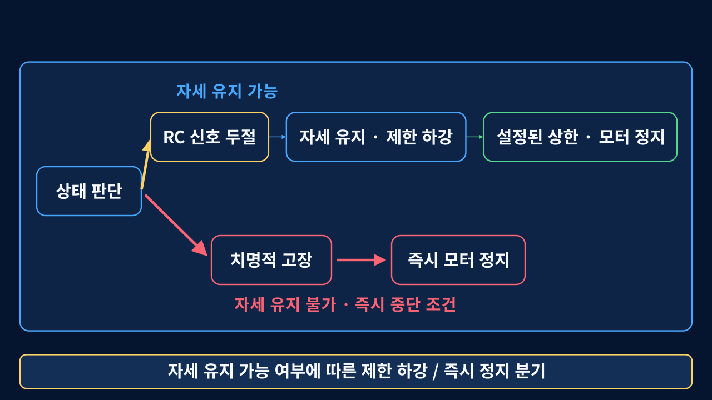
PMW3901 · 광류
연속된 바닥 영상을 비교해 카메라 시야에서 무늬가 움직이는 각속도 ω를 구하는 방식이다.
VL53L0X · ToF 거리
940nm 적외선이 바닥에 반사되어 돌아오는 시간을 이용해 절대 거리를 재는 방식이다.
익숙한 관계
선속도 v = 반지름 r × 각속도 ω
드론에 대입
바닥 속도 v ≈ 높이 h × 광류 각속도 ω
배치
기체 하부에서 렌즈가 수직으로 바닥을 향하고, 방향 화살표가 기체 전방을 향하는 배치이다. 회전 중심 가까이에 두어 보정해야 할 지렛팔 효과를 줄인다.
배선
5V · GND · TX 세 선을 사용한다. 모듈 TX를 ESP32-S3의 GPIO16에 연결하고, 수신 전용이므로 모듈 RX는 연결하지 않는다.
광학 조건
부팅 시 렌즈와 바닥 사이를 2cm보다 크게 두고, 바닥 무늬와 60lux 이상의 조도를 확보한다. 작동 범위는 약 8cm~2m이다.
펌웨어 배선 정의는 완료된 상태이다. 최종 브래킷·배선 고정과 장착 오프셋 실측은 HW 장착 후 확인 대상이다.
현재 구현
UART 비동기 수신
TX → GPIO16 수신
→
MSPv2 파서
CRC · 거리 · 광류 해석
→
텔레메트리 기록
거리·품질·Flow X/Y·품질 기록
제어 연결 전
신뢰도 문턱
품질값·센서 유효범위·데이터 신선도 확인
→
좌표와 척도
축·부호·장착 오프셋 확인, h × ω로 수평 속도 환산
→
비행 검증
기록 → 저고도 테더 → 폐루프 순서
VL53L0X 거리의 예상 효과
저고도 고도 제한과 착륙 접근 판단
IMU만으로 구분하지 못했던 지면 접근을 직접 거리로 관측한다. 충분히 검증되면 상한 시간에만 의존하는 하강을 고도 기반 단계로 보완할 수 있다.
PMW3901 광류의 예상 효과
GPS가 없는 실내의 수평 드리프트 억제
바닥 기준 수평 속도를 추정해 Roll·Pitch 목표에 보정값을 더하는 방식이다. 고도·자세 보정과 바닥 무늬·조도 조건을 함께 만족해야 한다.
현재 경계 — 수신·파싱·기록은 구현됐지만 두 측정값은 아직 모터 출력에 영향을 주지 않는다. 품질이 낮거나 데이터가 오래되면 기존 자세 제어와 시간 기반 안전 경로를 유지한다.
시도 1 · 원리적 한계
1g로 돌아오는 순간을 감지
착지하면 가속도가 1g로 안정될 것이라고 생각했다.
→ 등속 하강 중에도 계속 1g이다. 원리적으로 구분이 불가능했다.
시도 2 · 관측 대역 한계
지면에 부딪히는 순간의 충격을 감지
착지 순간에는 반발력으로 가속도가 튈 것이라고 보았다. 이론은 맞다.
→ 가속도 하드웨어 저역통과필터가 짧은 충격을 약화하고, 비행 진동과도 겹친다.
능동 프로브는 다음 가설이었지만, 비교했던 두 분포가 모두 지면 데이터로 확인됐다. 공중 분포는 미측정이므로 착지 판정 성능을 말할 수 없다.
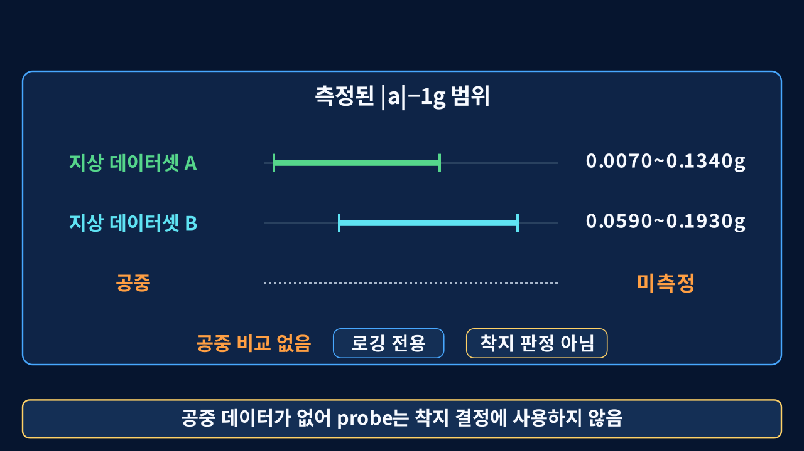
프로브 응답
상태를 텔레메트리에 기록만 남긴다.
→
착지 판정
landed=false를 유지해 조기 모터 컷에 사용하지 않는다.
→
하강 종료
자동착륙 진입 후 설정한 상한 시간이 정지를 결정한다.
센서 경로의 현재 경계
3901-L0X 거리·광류와 품질값을 기록하는 경로까지 구현했다. 착지 결정과 비행 제어에는 아직 사용하지 않는다.
현장 운용 범위
거리·광류 폐루프를 비행으로 검증하기 전까지 실내 저고도 자동착륙을 운용 범위에서 제외한다.
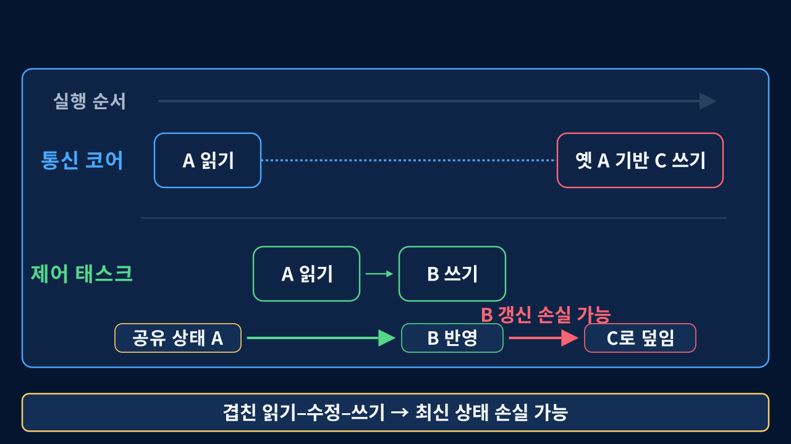
통신 코어
명령을 받아 요청 상태만 기록한다.
→
요청
제어 태스크
요청을 읽고 하나의 락 안에서 실행한다.
→
lock
공유 상태
함께 바뀌는 값을 같은 임계 구역에서 수정한다.
lock 밖에서 처리네트워크 전송처럼 오래 걸리는 작업은 임계 구역과 분리했다.
수정 후 안전 상태·자동착륙 단계·호버 추적에도 같은 공유 상태 패턴이 없는지 함께 점검했다.
단위 테스트
파서, 판정 게이트, 타임아웃 계산을 하드웨어 없이 검증
개별 로직 오류
SIL 시뮬레이션
실제 제어 코드를 가상 비행 물리와 결합해 부호와 게인 범위를 확인
제어·물리 상호작용
변이 테스트
게이트 제거와 순서 변경을 주입해 테스트가 실제로 실패하는지 확인
테스트의 검출력
자동 회귀 검증
커밋마다 같은 검증을 다시 실행
수정 뒤 재발
Ki 변경과 하강 기준값은 SIL·로그 측정을 근거로 정했다. 착지 판정은 근거가 부족해 현재 제어에 연결하지 않았다.
기체가 떠 있는 동안에는 어떤 이유로도 손을 뻗지 않는다.
거리
지정한 안전선 안에는 진행자만 접근
테더
범위를 제한한 상태에서 호버링 시연
기동
전원을 넣는 동안 기체를 움직이지 않음
중지
이상이 보이면 “스톱” 후 진행자가 즉시 정지
기상·장비 상태에 따라 현장 시연은 녹화 영상으로 대체한다.
보실 곳
- 기체가 가만히 있는 것처럼 보이는 동안에도, 네 모터의 출력은 계속 미세하게 바뀌고 있다
- 기울어지는 순간마다 반대쪽 모터가 먼저 반응한다
- 테더는 기체를 들어주는 것이 아니라, 범위를 제한하는 역할만 한다
다음 두 장에서, 이 순간 실제로 기록된 숫자를 보겠다.
Roll 표준편차 1.65°
Pitch 표준편차 1.23°
분석 구간 106.4초
제어 주기 일정하게 유지
테더 시험 구간의 관측
테더 시험 구간의 관측
이 수치는 테더 시험 구간의 자세 분산이며, 안정 자유비행을 검증한 결과는 아니다.

전체 2,135행에서 M3 평균은 1360.0µs, M1 평균은 1334.2µs였다. 두 출력 사이에 약 26µs의 차이가 계속 남았다.
이 차이는 제어기가 지속적인 비대칭을 보정했다는 증거이다. 원인은 질량 분포뿐 아니라 모터·프로펠러 추력차, 테더, 프레임, 공력 비대칭일 수 있다.
지속적인 비대칭 출력은 확인됐지만, I 항의 기여도는 적분항 로그를 따로 확인해야 한다.
스틱을 앞으로 살짝 기울이면, 기체는 앞으로 기울어진 상태를 목표로 삼고 그 방향으로 미끄러져 간다.
스틱 중앙
목표 기울기 0° — 제어기는 수평을 유지하려 한다
스틱을 앞으로
목표 기울기가 바뀐다. 제어기는 그 기울기를 유지하려 하고, 결과적으로 앞으로 간다
스틱을 놓으면
목표가 다시 0°로 돌아온다. 기체는 수평으로 돌아오지만, 이미 붙은 속도는 남아 조금 더 간다
현재 스틱 입력은 목표 기울기를 바꾼다. 고도·위치 유지 기능은 아직 없다.

설치·로그인 없이 모두가 동시에 시작한다.
세로 화면
스마트폰을 세로로 들고 센서 또는 터치 조작을 선택한다.
축 확인
인공수평계에서 좌우 Roll과 앞뒤 Pitch의 변화를 확인한다.
균형잡기
외란을 반대로 보정해 가상 드론을 수평에 가깝게 유지한다.
교육용 시뮬레이션이며 실제 기체와 연결되지 않는다. 실제 시연 기체는 진행자만 조종한다.
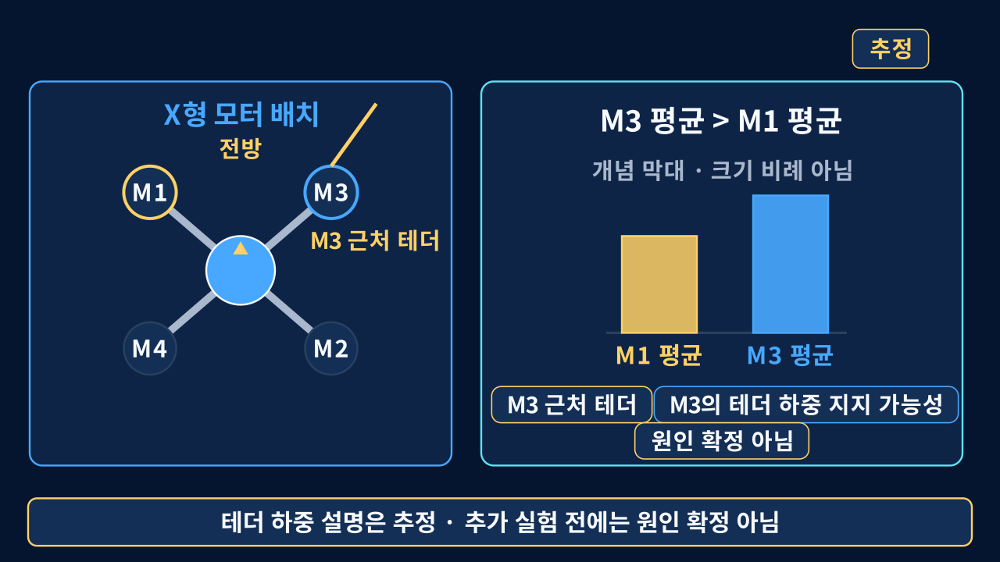
M1 관측과 M3 근처 테더 줄을 근거로 M3가 테더 하중을 지지했을 가능성이 높다고 추정하되 다른 원인을 배제하지 않은 시각화" aria-label="테더 구간의 M3>M1 관측과 M3 근처 테더 줄을 근거로 M3가 테더 하중을 지지했을 가능성이 높다고 추정하되 다른 원인을 배제하지 않은 시각화" style="display:block;width:100%;aspect-ratio:16/9;flex:1;min-height:0;object-fit:contain;background:#06152f;border-radius:4px">기록으로 확인한 항목
- 첫 실비행 무장 구간 로그 확보
- 기록 구간에서 고장 플래그 비활성 · 듀얼 IMU 유지
- 제어 루프가 예정된 주기를 유지
- 비행 중 자기계 보정 경로 활성
- Yaw hold 잠금이 대부분의 구간에서 유지
진행 중
- 안정적인 정지 호버 재현
- 시간 기반 자동착륙 비행 검증
- Ki와 기체 비대칭의 실기 재조정
- 3901-L0X 장착과 거리·광류 제어 연결
아직 검증하지 않음
- 거리·광류 폐루프 고도·위치 유지
- 실내 저고도 자동착륙 신뢰성
- 실외 자유 비행
- 경로 계획 · 군집 제어
실비행 로그는 확보했지만, 안정 호버 · 자동 착륙 · 자유 비행 검증과는 별개
단기
단일 기체 재현성
반복 가능한 단일 기체 자세 제어
3901-L0X 연결과 착지 판단 검증
통과 기준 · 반복 시험에서 자세 · 센서 · 안전 전환 확인
중기
반복 제작과 경로
반복 제작·교정 절차
sim-to-real 경로 계획과 다기체 운용 기반
통과 기준 · 같은 제작·교정 절차로 기체별 상태 확인
장기
군집 안전
군집 제어와 충돌 회피
통신 이상 시 집단 안전
통과 기준 · 다기체 시험에서 분리 · 회피 · 안전 전환 확인
현재 경계 · 모두 계획 단계 각 단계는 이전 단계의 통과 기준을 충족한 뒤 순서대로 진행한다.
Q & A
프레임에서 펌웨어까지 직접 만들고, 실패를 측정 가능한 실험으로 바꿨다.
비행 제어 기술
검증 과정
교육 적용
다중 드론 확장
검증 과정
교육 적용
다중 드론 확장
이 영상은 테더 시험 기록이며 안정 자유비행 완료를 뜻하지 않는다.